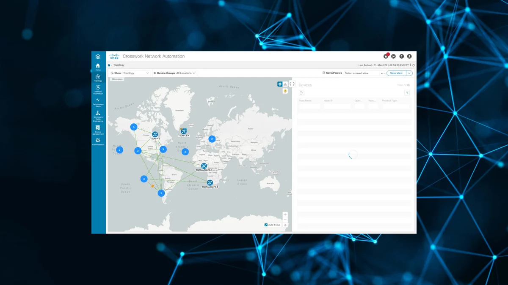

All projects
Cisco
Cisco Crosswork Network Automation
Crosswork Network Automation automates the configuration, management, testing, deployment and operation of physical and virtual network devices. I focused on usability and accessibility through its design system.
- Company
- Cisco
- Area
- Design system
- Product
- Crosswork Network Automation

- growth of the Crosswork design system
- +20%
- design efficiency for the team
- +10%
Overview
Crosswork Network Automation is a platform for automating the configuration, management, testing, deployment and operation of both physical and virtual network devices.
My focus was improving the product's overall usability and accessibility by building out its dedicated design system. I expanded the design system by 20%, which increased the team's design efficiency by 10%.
More detail
This work is covered by confidentiality. I'm happy to walk you through it in more depth. Email me.